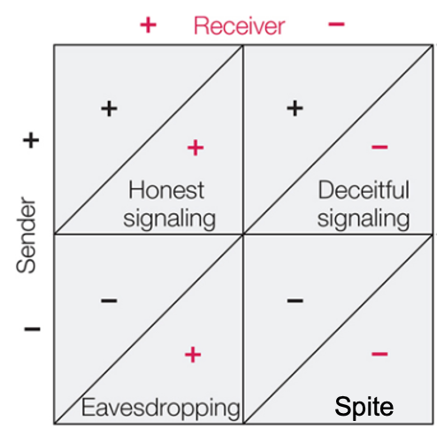
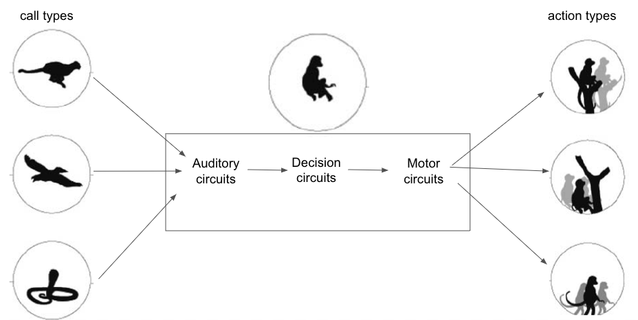
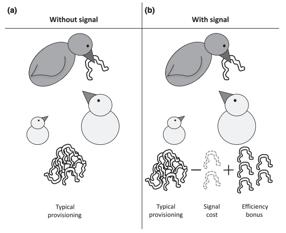
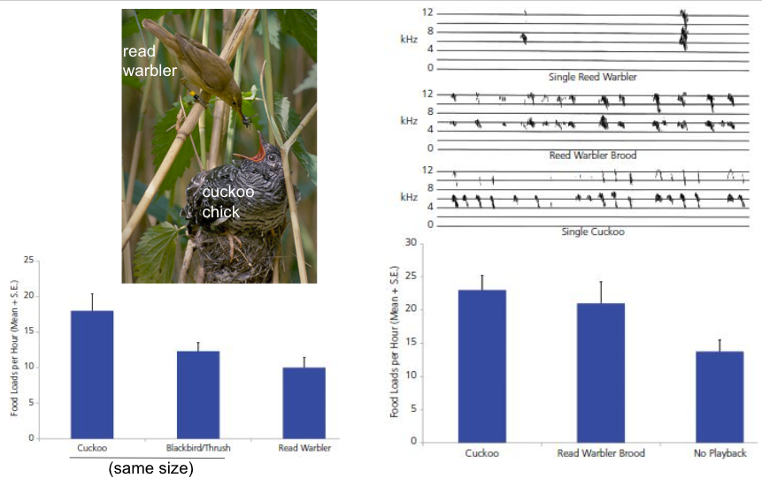
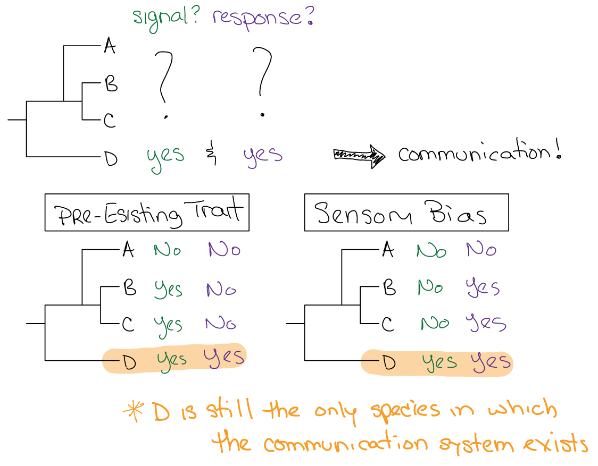
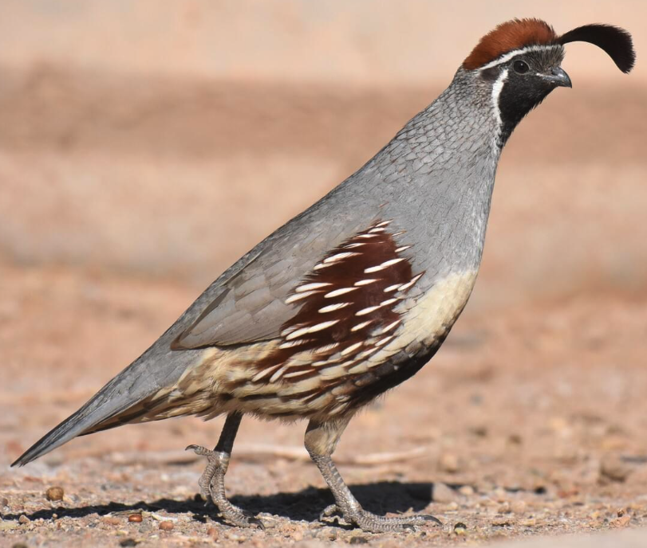

Communication: Ultimate
Contents
Communication: Ultimate¶
Last class, we touched on various aspects of a definition of communication that was roughly: A sender communicates a signal to a receiver, the signal contains information, and the receiver acts upon the signal.
⏳ 5 min
Q1: Which of the following would you consider to be examples of communication? (can select more than one)
a) a male frog makes a vocalization and a female moves toward it
b) a male frog makes a vocalization and a predatory bat moves toward it
c) a human vocalizes to a dog and the dog moves toward it
d) a vigilant meerkat vocalizes and all the other meerkats scatter to their burrow–the vigilant meerkat eats the others’ food.
⏸️ PAUSE here for class-wide discussion
Rubenstein and Alcock1 outline a cost-benefit approach to compare the fitness consequences of honest signaling, deceitful signaling, eavesdropping, and spiteful signaling.
NOTE: It looks similar, but this is NOT a game theory matrix
Rubenstein and Alcock define communication by the use of a “specially evolved signal” such that the use of the signal should benefit the sender. Therefore, they would only categorize their top row as “communication”.
{kind=link}
This definition does not consider the fitness of the receiver. Importantly, their categorization method falls short of a full evolutionary/adaptive explanation for a communication system: one that takes into account ALL factors (+ and -), not just “benefits”
We still have to grapple with the existence of communication systems that seem to decrease the fitness of one of the parties involved (sender or receiver).
For example, for deceit to exist, the receiver must gain an overall net fitness benefit from the signal:response relationship, otherwise it would no longer respond to the signal and the sender would no longer be able to deceive.
Whether eavesdropping is “communication” or not, we still have to account for all factors effecting the senders’ evolutionary fitness in order to explain its existence .
Edward Wilson (one of the founders of the study of sociobiology) defines communication as occuring when:
“…the action of or cue given by one organism (the sender) is perceived by and thus alters the probability pattern of behavior in another organism (the receiver) in a fashion adaptive to either one both of the participants” (Wilson 1975)2. This definition encompasses all interactions outlined in the cost-benefit table above. Note that this definition does NOT require the “intention” of the sender in producing the communication signal. For a definition of communication that depends on intent, eavesdropping is still an odd one out–only in eavesdropping is a response in a receiver evoked by information that the sender did not intend for the receiver to use.
Additionally, this publication from Nature Education categorizes both eavesdropping and deceit as communication.3
Interestingly, spite implements a “specially evolved signal” (though not in an “adaptive” sense of the word) that contributes to a decrease in the fitness of the sender. From this perspective, communication cannot simply be defined by information transfer for which the sender gains a fitness benefit.
Do you/we define communication based on the fitness to the sender or by the intent of the sender? Or by some other set of features?
Function¶
A hypothesis about the “function” of a behavior is basically a hypothesis about what positive selective pressures shaped it.
Communication implements signals that contain information. Communication requires co-evolution of proximate mechanisms in both the sender and the receiver for the purpose of communication. Therefore, in communication, the signal–response system must ultimately provide a net increase in evolutionary fitness for both sender and receiver.
Let’s consider some common “functions” for communication (ie. the consequences of communication that contribute positively in an evolutionary model).
Defense¶
Meerkats, cooperatively breeding mammals, live in social groups of up to 50 individuals which forage cohesively, typically 1–10 m next to each other. Individuals search for prey in the sand with their heads orientated downwards, which impairs visual communication. Therefore, they instead rely on an array of vocal signals to communicate. One type of communication is an alarm call system. Alarm calls from a meerkat (a sender) evoke escape responses in other meerkats (receivers).
Meerkats are not the only animals with referential communication signals. Vervet monkeys also produce different alarm calls in the context of different predators.
Why do these animals use multiple calls and not just one alarm call for all predators?
Recordings of the alarms played back when predators were absent caused the monkeys to run into trees for leopard alarms, look up for eagle alarms, and look down for snake alarms. Therefore, the information in the alarm calls is enough to trigger different predator-specific escape FAPs.
Knowing something about proximate mechanisms is important for understanding and questioning ultimate mechanisms. For example, the extra neural process required for signaler categorization of predators, and the extra neural process required for receiver categorization of the alarm calls takes time (more layers of neural processing needed to tune more complex receptive fields) and energy (to maintain the neural circuits, etc). Additionally, additional behavioral options requires additional neural circuits to orchestrate those actions. These considerations about proximate mechanisms must be factored in to evolutionary models.
{kind=link}
Alarm calls may also be directed at predators to communicate that the prey has detected it (this is not mutually exclusive with conspecific communication of information about the predator risk). Alerting your presence to a predator may seem counter-intuitive.
From an ultimate perspective, why might prey signal TO predators “on purpose”?
Competition¶
Male dancing fiddler crabs (Uca terpsichores) have one normal claw and one super-sized claw that they use as a weapon to threaten and fight other males and as an adornment to attract females. When the crabs are in a contest for territory, they do not necessarily fight. They wave their super-sized claw around at each other before deciding to engage in a fight or walk away from it. Males assess an opponent’s fighting ability by using claw length as a signal of strength (Jennions & Backwell 1996).
In the following video, there will be two fighting crabs. The male on the left has no burrow of his own—and no mate—while the male on the right tries to defend his own. The crabs with two small claws that look like they’re twiddling their thumbs are females picking microscopic food from the sand.
Why signal in the context of contests/competition?
One way to make sense of this behavior is to consider it in the context of the fighter : pacifist game theory model. We will add the assessor behavior to the model. Assessors judge their opponent and only fight if they assess that they are more likely to win; if they are unlikely to win, they act like a pacifist and do not engage in the contest. Signals that convey information about the ability to win a fight would enable the assessor behavior.
Let’s say that, on average, an assessor is larger than its opponent half the time and smaller half the time. Second, when the assessor is larger, it acts like a fighter, and when smaller, it acts like a pacifist, and we already know the payoffs for fighter and pacifist. Keep in mind another assumption implicit in this model, which is that the animal that is more likely to win in a fight, always wins. Nothing changes about interactions among fighers and pacifists, so we only need to fill in the new payoffs that involve Assessor.
Fighter |
Pacifist |
Assessor |
|
|---|---|---|---|
Fighter |
\((v-c)/2\) |
\(v\) |
\((v-c)/2\) |
Pacifist |
\(0\) |
\(v/2\) |
\(v/4\) |
Assessor |
? |
\((3/4)v\) |
? |
⏳ 5 min
Q2: What is the average fitness of an Assessor in a population of Fighters?
Q3: What is the average fitness of an Assessor in a population of Assessors?
Q4: Are there any behavioral contexts in which the Pacifist has the most fitness of the three behavioral phenotypes?
⏸️ PAUSE here for class-wide discussion
Solving for the conditions under which Assessor is an evolutionarily stable behavior (the behavior “favored by” evolution) demonstrates why communication signals that signal strength or dominance exist. You can simulate the model to test your predictions.
Parent-Offspring Care¶
Often offspring signal (beg) to their parents for food. Why?
One function could be to signal need. However, signalling need does not necessarily mean that the signalling offspring get fed. There are actually examples of parents and situations in which the already healther and more viable offspring is preferentially fed5.
{kind=link}
Fig. 120 From Caro et al (2016)5: (a) In unpredictable environments, parents may produce a larger brood than future environmental conditions will support. This selects for parents to preferentially feed the offspring with the highest chance of survival. We predict parents will assess quality by cues such as body size, or structural signals such as dark mouths. Offspring may still beg, but parents should ignore begging in favour of other information. (b) In contrast, in predictable environments, parents will lay an appropriate number of eggs and food will be plentiful enough to rear all their offspring. Here parents will be selected to preferentially feed offspring in the worst condition. Caro et al predicted that offspring should signal need through begging, and parents will feed those begging more.¶
It is commonly assumed that in order for animal signals to be advantageous, the information being signalled could not have been obtained otherwise, and is therefore ‘cryptic’ or ‘private’. However, costly signals of noncryptic condition are also biologically feasible.5 Parents can distribute food amongst their offspring by relying on a cue of condition, such as body size. Alternatively, parents could distribute food amongst their offspring by relying on a signal of that noncryptic condition, such as begging calls. If it is much faster for parents to use the signal, they could spend more time foraging for additional caterpillars to feed their brood–the signal therefore provides an efficiency benefit. As long as the efficiency benefit of using the signal outweighs the cost of producing the signal, this communication system can be advantageous, even if the information encoded in the signal is noncryptic.5
{kind=link}
Deceit¶
In a deceitful communication interactions, the sender increases its fitness at a “cost” to the receiver.
For example, brood parasites insinuate themselves into the nests of solitary nesting birds (the “host”) (many solitary nesting bird species have not needed to develop conspecific recognition systems like those that have evolved in social species). These brood parasites then employ deceptive signals that trigger parental care by the host parent.
Parasitic common cuckoos lay an egg in the nest of a host reed warbler. The cuckoo chick kills all of the hosts offspring. Then, the cuckoo chick mimics the simultaneous vocalizations of an entire brood of reed warblers (approximately 4 reed warbler chicks). The host parent then brings the single cuckoo chick the same amount of food that it would bring its brood of several chicks. Importantly, this response is attributable to the signaling behavior of the cuckoo chick and not its size (a cue).
{kind=link}
Mating¶
For example, the sexually dimorphic communication signals used by Xenopus in the context of mating.
A central question pervading the research into communication signals in the context of mating is how the essential match between signal features and receiver characteristics has evolved and is maintained during evolution. As signals diverge across species, the pattern generating mechanisms in one sex must continue to match the sensory tuning mechanisms in the other sex.
Eavesdropping¶
Male tùngara frogs use mating calls to attracts females. However, the mating call also attracts midge flies that feast on amphibian blood. Rather than homing in on chemical cues as mosquitoes do, these midge flies locate food by listening for the amphibian’s mating call. This is one of the few examples of eavesdropping across the vertebrate/invertebrate barrier.
The evolution of communication signals¶
How might communication systems arise in the first place? In other words, what is the phylogenetic history of a particular communication system and what selective pressures shaped it?
{kind=link}
Sensory Bias¶
Many communication signals are shaped by the sensory systems of receivers. The sensory systems of receivers are shaped by the environment that they live in and the other behaviors that they engage in. For example, animals use their sensory systems to stay alive–to find food and avoid predation–and these sensory functions exert selective pressures on sensory systems independent of their use in communication.
Behavioral responses to signals that evolved in noncommunication contexts or as by-products of sensory systems or other preferences are often co-opted by communication systems. In other words, the response phylogenetically exists before the communication signal that evokes it. This often happens in the context of mating, which we will discuss in more depth in the context of sexual selection.
One example of this is found in water mites (Neumania papillator), in which males have evolved a mating signal that elicits a predatory response in females.6
Water mites are an ambush predator of copepods. When hunting for prey, males and females rest on aquatic vegetation with their first four legs upraised in the net stance position. In this posture they orient to and clutch at passing crustaceans. Prior to depositing its spermatophores, a male water mite walks slowly around a female while vibrating his legs at the same frequency as the vibrations caused by swimming copepods.
{kind=link}
Fig. 121 The female (left) is in a “net stance”, which is the posture assumed while waiting for copepod prey to wander by. The male vibrates his foreleg in front of the female. Like water vibration normally caused by a copepod prey wandering by, the male’s vibrations evoke an orienting and clutching response from the female. However, once the female realizes they have clutched a conspecific male instead of prey, the female lets the male go. The male then deposits spermatophores for the female to utilize.¶
In the presence of courting males, starved females orient to and clutch males more often than well fed ones. This result provides evidence that the male signal likely evolved by capitalizing on female adaptations for predation.
Evolutionarily, before males signalled to females with the trembling display, females responded to copepod-like vibrations in the water by orienting to the source of the vibration and clutching the object at that location. If a mutant male that elicited this predatory response is more successful at mating than other males, the mutant gene for the male trait would spread and become specialized to mimic the prey stimulus.
The female’s predatory orienting response to trembling may allow males to manipulate the female’s orientation and make the spermatophores more salient. Oddly, a benefit of the female response to trembling may be to assure the male that it is courting a female rather than chemical stimuli left on a recently abandoned perch… consistent with this, male water mites do tremble at perches that females have recently vacated (but they do not subsequently deposit spermatophores).
Pre-existing Traits¶
Many traits are shaped by non-communication needs in the sender. These traits can then be co-opted for communication.
For example, In response to extreme stress, the sympathetic nervous system causes the piloerection reflex, which makes the muscles attached to the base of each hair follicle contract and force the hair up. Perhaps this physiological reflex evolved because it made animals appear bigger under stress of predation or competition, and this cue then causes predators or other contestants to be scared away easier.
Some people can consciously initiate the sensation and physiological signs of piloerection. The phenomenon is discovered spontaneously, appearing to be innate, and is not known to be possible to learn or acquire. Those with the ability frequently are unaware that it is not possible for everyone. The ability appears to correlate with personality traits associated with openness to experience.
Perhaps this provides insight into the evolution of aggressive behavior in male Gambel’s quails (Callipepla garnbelii). Males have a long head plume.
{kind=link}
The main function of the plume seems to be to intimidate other male quail during aggressive interactions. The more dominant male in a contest will erect the plume forward, while the less dominant male in the contest will lower the plume backward. Perhaps voluntary control over the piloerection reflex led to those males being able to “scare off” potential contestants. This increased fitness from winning otherwise costly fights, would exert selective pressure for the elaboration of morphological and behavioral traits that could increase the piloerective signal–like the plume and the ability to voluntarily control its movement.
An understanding of why signals like the quail’s plume displays exist can come in part from examining the addition of an assessor strategy to the figher : pacifist game theory model of animal contests.
The evolution of vocal learning¶
{kind=link}
Additional Resources¶
Marta Manser, Professor of Animal Behavior in Zurich and the Communication and Cognition in Social Mammals Group
In Birds’ Songs, Brains and Genes, He Finds Clues to Speech: Erich Jarvis
The Evolution of Animal Communication: Ch2 Signaling When Interests Overlap
The Evolution of Animal Communication: Ch3 Signaling When Interests Diverge
Michael J. Ryan and Molly E. Cummings Perceptual Biases and Mate Choice Annual Review of Ecology, Evolution, and Systematics 44, 437-459 (2013)
Rachel A. Page, Michael J. Ryan, and Ximena E. Bernal Be Loved Be Prey Be Eaten pp. 123-154.In: Animal Behavior, vol 3. Case Studies: Integration and Application of Animal Behavior (ed., K. Yasukawa), New York: Praeger.
Julie Hagelin (2003) Ornaments, body size, and mating behavior of the Gambel’s quail.
Wilczynski, W., A, S. R., & Ryan, M. J. (2001). Evolution of calls and auditory tuning in the physalaemus pustulosus species group. Brain, Behavior and Evolution, 58(3), 137-51. Retrieved from https://ezproxy.wesleyan.edu/login?url=https://www.proquest.com/scholarly-journals/evolution-calls-auditory-tuning-physalaemus/docview/232159569/se-2
- 1
Dustin Rubenstein (2022) Animal Behavior, Twelfth Edition. ISBN: 9780197564912. Douglas Alcock co-authored all previous editions.
- 2
Wilson, E.O. Sociobiology: The New Synthesis. Cambridge, MA: Harvard University Press (1975).
- 3
(Gillam, E. (2011) An Introduction to Animal Communication. Nature Education Knowledge 3(10):70)
- 4
- 5(1,2,3,4)
- 6
- 7
Jarvis (2019) Evolution of vocal learning and spoken language